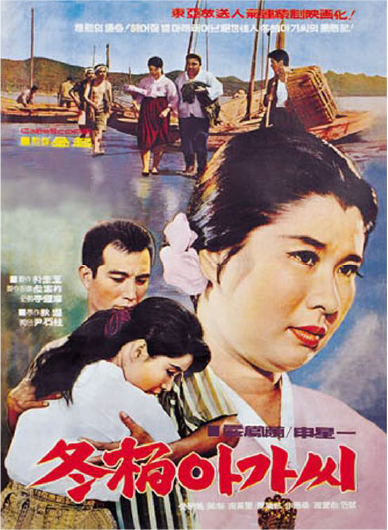
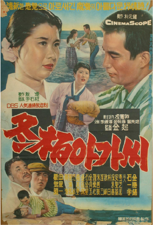
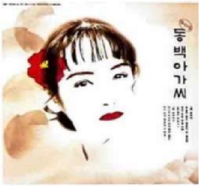
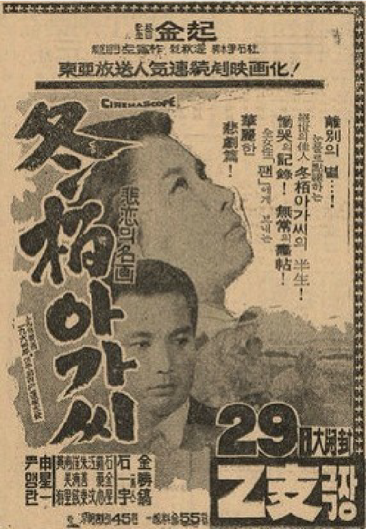
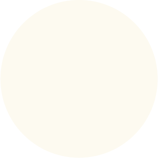

"60-70년대 격동의 세월을 살아낸 우리 어머니의 눈물과 한
동백꽃이 붉게 피어날 때마다
가슴에 피멍이 드는 것만 같습니다.
오지 않을 사람을 기다리는 일이
제 평생의 업보라면,
차라리 흔적 없이 지고 싶습니다.
엄마는 괜찮다.
내 몸 하나 부서져서
너만 예쁘게 자랄 수 있다면,
이깟 눈물 바람쯤은 아무것도 아니란다.
네가 내 삶의 유일한 봄날이니까.
"원망도 많았고 눈물도 강을 이뤘지만, 흘러간 세월 잎에 다 무슨 소용이겠습니까. 그저 그 시절 우리 모두가 아팠던 것을요."